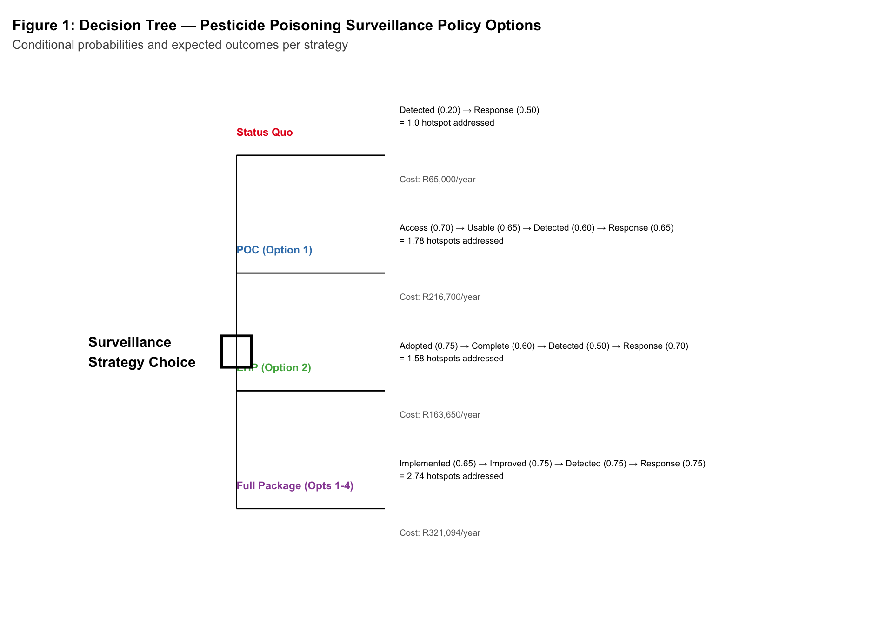
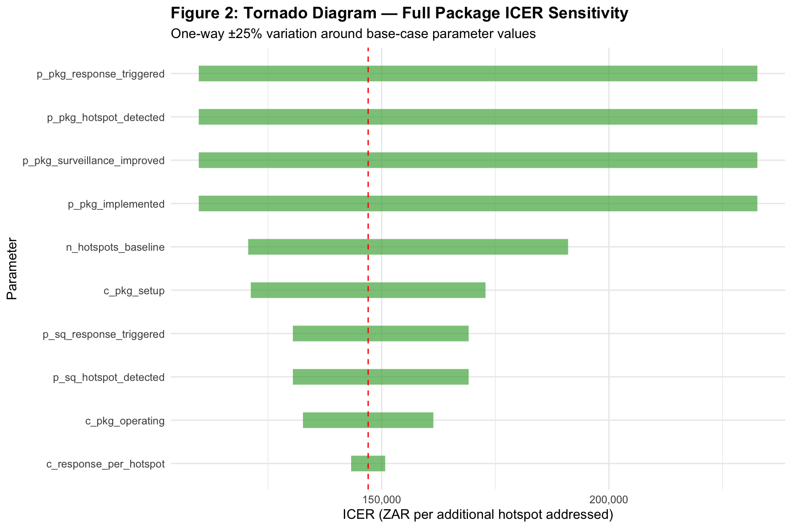
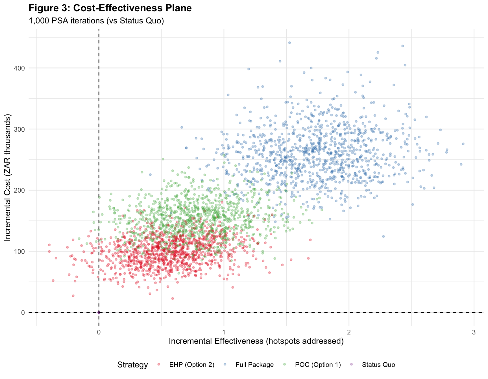
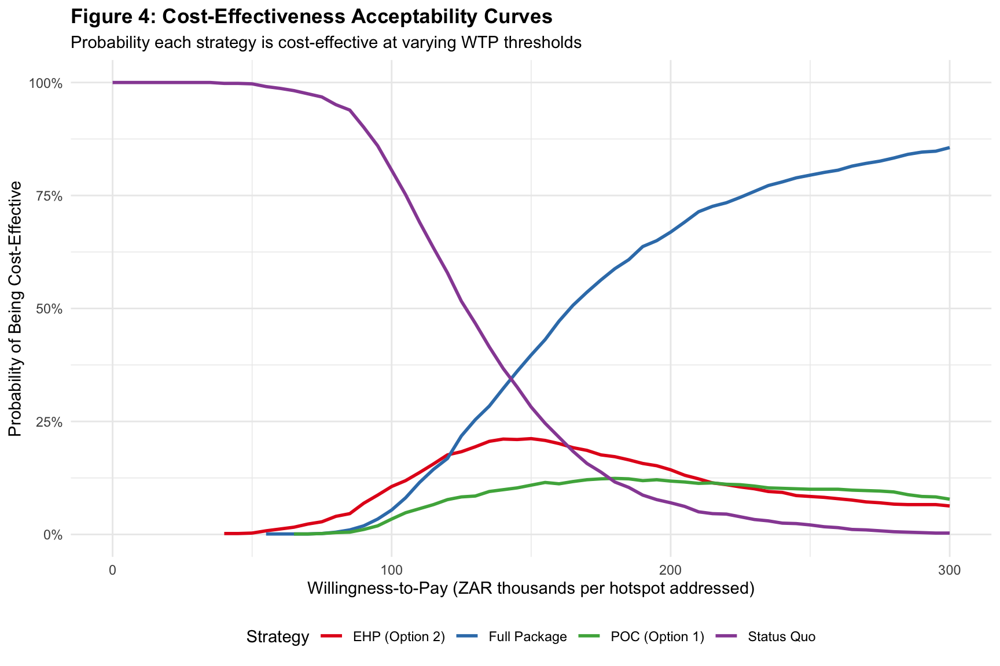
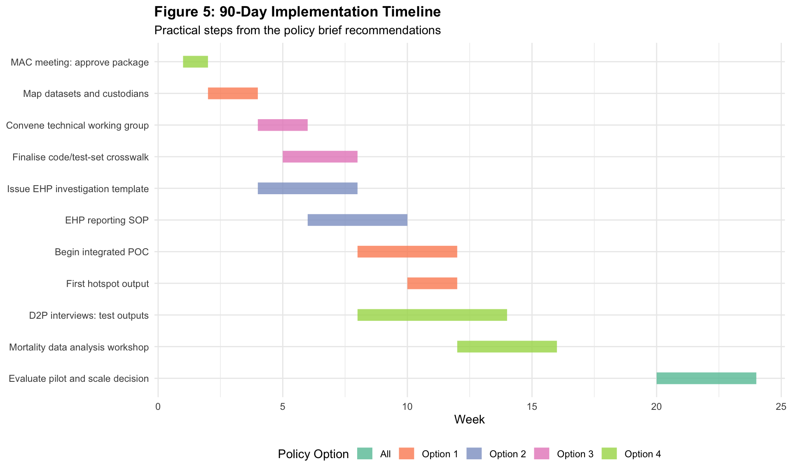

| Table 1: Model Parameters | ||
| Decision tree inputs with probability distributions for PSA | ||
| Parameter | Value | PSA Distribution |
|---|---|---|
| Baseline | ||
| n_hotspots_baseline | 1.0e+01 | Fixed |
| Status Quo | ||
| p_sq_hotspot_detected | 2.0e-01 | Beta(20, 80) |
| p_sq_response_triggered | 5.0e-01 | Beta(50, 50) |
| POC (Option 1) | ||
| p_poc_data_access | 7.0e-01 | Beta(70, 30) |
| p_poc_data_usable | 6.5e-01 | Beta(65, 35) |
| p_poc_hotspot_detected | 6.0e-01 | Beta(60, 40) |
| p_poc_response_triggered | 6.5e-01 | Beta(65, 35) |
| EHP (Option 2) | ||
| p_ehp_adoption | 7.5e-01 | Beta(75, 25) |
| p_ehp_reporting_completeness | 6.0e-01 | Beta(60, 40) |
| p_ehp_hotspot_detected | 5.0e-01 | Beta(50, 50) |
| p_ehp_response_triggered | 7.0e-01 | Beta(70, 30) |
| Full Package | ||
| p_pkg_implemented | 6.5e-01 | Beta(65, 35) |
| p_pkg_surveillance_improved | 7.5e-01 | Beta(75, 25) |
| p_pkg_hotspot_detected | 7.5e-01 | Beta(75, 25) |
| p_pkg_response_triggered | 7.5e-01 | Beta(75, 25) |
| Cost: Status Quo | ||
| c_sq_program | 5.0e+04 | Gamma(25, 2000) |
| Cost: POC | ||
| c_poc_setup | 1.2e+05 | Gamma(25, 4800) |
| c_poc_operating | 7.0e+04 | Gamma(25, 2800) |
| Cost: EHP | ||
| c_ehp_setup | 8.0e+04 | Gamma(25, 3200) |
| c_ehp_operating | 6.0e+04 | Gamma(25, 2400) |
| Cost: Full Package | ||
| c_pkg_setup | 1.8e+05 | Gamma(25, 7200) |
| c_pkg_operating | 1.0e+05 | Gamma(25, 4000) |
| Cost: Response | ||
| c_response_per_hotspot | 1.5e+04 | Gamma(25, 600) |
Decision Tree Analysis: Pesticide Poisoning Surveillance Policy Options in South Africa
Short-term institutional options that can be implemented without major legal reform
1 Executive Summary
This report presents a decision tree analysis comparing four short-term policy options for improving pesticide poisoning surveillance and response in South Africa. The model evaluates the probability that each strategy successfully detects and responds to poisoning hotspots, alongside estimated costs.
ImportantPlaceholder Parameters
All probability and cost parameters in this model are placeholders derived from expert assumptions and the policy brief. They should be refined using:
- Empirical data from the NMC surveillance system (~690 notifications/year)
- NHLS butyrylcholinesterase data (~2,000 severe cases/year)
- Actual programme budgets from the surveillance concept note (R4.4M – R6.1M)
- D2P interview findings on decision-maker needs
2 Background and Problem Statement
2.1 Epidemiological Context
From 2020–2024, South Africa’s NMC system recorded 3,457 pesticide poisoning notifications (approximately 690 per year). Key findings from the triangulated analysis of NMC, PIH and BChE data:
- Seasonal peaks: September–November each year
- Highest burden: Females 15-19 years (ASR 0.46 per 100,000 person-years for BChE cases)
- Under-6 years: 99% accidental exposures
- Adolescents 13–19: 91% intentional self-harm
NoteData Sources Available for Model Refinement
Five existing data streams can feed this model:
- NMC notifications — NICD NMC application (~690 cases/year)
- Cholinesterase results — NHLS laboratory systems (~10,000 tests/year, ~2,000 severe)
- FCL data — NHLS/TRAK-held toxicology signals
- Forensic data — Thakadu/Kagiso and forensic pathways
- EHP investigations — District/provincial environmental health services
2.2 Institutional Causes (Fishbone Analysis)
The policy brief identifies five root causes addressable without legal reform:
- Fragmented surveillance architecture — no integrated operational picture
- Unclear technical rules — inconsistent code/test mapping to NMCs
- Weak field investigation feedback — EHP findings not fed back
- Person-dependent access — no stable SOPs for data access
- Data not translated into action — no standing hotspot product
3 Policy Options and Decision Tree
3.1 The Four Strategies
TipHow to Adjust Parameters
To modify any parameter:
- Edit
amua_import_parameters.csv— change theExpressioncolumn for point estimates - Update the
Notescolumn to adjust distributions (e.g.,dist=beta(80,20)for a higher probability) - Re-run
wrangling.rto regenerate all outputs - Re-render this document
Key parameters to refine first:
n_hotspots_baseline: How many actionable hotspots occur per year? (Currently: 10)p_sq_hotspot_detected: What fraction does the current system detect? (Currently: 0.20)c_pkg_setupandc_pkg_operating: Use actual budget estimates from the concept note
3.2 Decision Tree Structure

WarningModel Assumptions
The decision tree assumes:
- Independence: Each chance node is conditionally independent
- Single period: Costs and effectiveness are evaluated over one annual cycle
- Linear pathway: Each strategy has a sequential chain of conditions that must be met
- Hotspot-based outcome: Effectiveness is measured in hotspots detected and responded to, not individual cases prevented
These are simplifications. A more complex model could incorporate:
- Multi-year time horizon with discounting
- Markov transitions between surveillance system states
- Case-level outcomes (DALYs averted, deaths prevented)
- Dynamic feedback loops (improved detection → better reporting → more detection)
4 Base-Case Results
| Table 2: Base-Case Decision Tree Results | ||||||
| Expected hotspots addressed and costs per strategy | ||||||
| Strategy | P(Addressed) | Expected Hotspots Addressed | Total Cost (ZAR) | Incremental Effectiveness | Incremental Cost (ZAR) | ICER (ZAR/hotspot) |
|---|---|---|---|---|---|---|
| Status Quo | 0.1000 | 1.00 | 65,000 | 0.00 | 0 | NA |
| POC (Option 1) | 0.1774 | 1.77 | 216,618 | 0.77 | 151,618 | 195,762 |
| EHP (Option 2) | 0.1575 | 1.57 | 163,625 | 0.57 | 98,625 | 171,522 |
| Full Package | 0.2742 | 2.74 | 321,133 | 1.74 | 256,133 | 147,018 |
Interpretation: Under base-case assumptions:
- The Status Quo detects and responds to 1 hotspots per year at a cost of R65,000
- The Full Package increases this to 2.7 hotspots at R321,133
- The ICER for the Full Package is R147,018 per additional hotspot addressed
CautionInterpreting the ICER
The ICER is expressed per additional hotspot addressed, not per DALY averted or death prevented. To convert to a standard health-economic threshold:
- Estimate the average DALYs averted per hotspot response (e.g., if each hotspot response prevents 5 poisoning cases and each case = 2 DALYs, then 1 hotspot = 10 DALYs)
- The SA cost-effectiveness threshold is approximately R48,474 per DALY averted (Edoka & Stacey, 2020)
- Action item: Use D2P interviews and the mortality data workshop to estimate DALYs per hotspot
5 Sensitivity Analysis
5.1 One-Way Sensitivity Analysis (Tornado Diagram)

TipKey Drivers to Investigate
The parameters with the widest bars are the most influential on the ICER. Focus data collection and expert elicitation on these first. In particular:
n_hotspots_baseline: How many actionable hotspots per year? This is the denominator — more hotspots = better value for investmentp_pkg_implemented: Will the full package actually be implemented? Institutional buy-in is criticalc_pkg_setup: Can setup costs be reduced by leveraging existing infrastructure?
5.2 Probabilistic Sensitivity Analysis
| Table 3: Probabilistic Sensitivity Analysis Summary | ||||
| 1,000 Monte Carlo simulations | ||||
| Strategy | Effectiveness (mean, 95% CI) | Cost (mean, 95% CI) | Mean ICER | Median ICER |
|---|---|---|---|---|
| EHP (Option 2) | 1.57 (1.14–2.06) | R163,803 (R124,312–R206,338) | 1,321,557 | 169,575 |
| Full Package | 2.74 (2.09–3.39) | R324,643 (R247,558–R415,595) | 157,776 | 149,959 |
| POC (Option 1) | 1.78 (1.3–2.36) | R217,252 (R166,740–R279,348) | 325,511 | 196,973 |
| Status Quo | 1 (0.64–1.46) | R 65,088 (R 44,394–R 89,007) | NaN | NA |


NoteReading the CEAC
The CEAC shows the probability that each strategy is the most cost-effective at a given willingness-to-pay (WTP) threshold. At low WTP values, the Status Quo dominates (cheapest). As WTP increases, strategies that detect more hotspots become preferred.
Decision rule: At the threshold where the preferred strategy’s curve crosses 50%, there is a coin-flip chance it is cost-effective. Higher WTP values give greater confidence.
6 Implementation Timeline

ImportantPractical Next Steps (from Policy Brief)
- Week 1–2: MAC meeting — approve package, nominate lead coordinator
- Week 2–4: Map each dataset against custodian, platform, minimum fields, frequency
- Week 4–6: Convene technical working group for code/test-set crosswalk
- Week 4–8: Issue standard EHP investigation template and reporting SOP
- Week 8–12: Begin integrated POC, produce first hotspot output
- Week 8–14: D2P interviews to test what outputs decision-makers need
Use D2P interview findings to update the model parameters in amua_import_parameters.csv
7 Adjusting the Model
TipQuick Guide to Model Customisation
7.0.1 Changing probabilities
Edit amua_import_parameters.csv. Each row has:
Name: Parameter identifier used in the R codeExpression: Point estimate valueNotes: Contains the PSA distribution specification (e.g.,dist=beta(60,40))
7.0.2 Adding a new strategy
- In
methods.r, add a new branch toevaluate_tree()following the existing pattern - Add corresponding parameters to the CSV
- Update
build_tree_structure()for the diagram
7.0.3 Changing the outcome measure
Currently the model measures “hotspots addressed”. To change to DALYs:
- Add a conversion parameter (e.g.,
dalys_per_hotspot) to the CSV - Multiply
effectivenessby this parameter inevaluate_tree() - The ICER will then be in ZAR per DALY averted
7.0.4 Connecting to Amua
The amua_import_parameters.csv is formatted for import into Amua, an open-source decision analysis tool. You can:
- Build the tree graphically in Amua
- Export/import parameters via the CSV
- Use this R pipeline for extended analyses (PSA, CEAC) that Amua may not provide
WarningLimitations
- Placeholder parameters: All values are expert assumptions pending empirical data
- Single-period model: Does not capture learning effects, scale-up, or long-term outcomes
- Hotspot-level outcomes: Does not translate to individual cases prevented or DALYs
- No budget impact analysis: Total fiscal impact depends on government budget constraints
- No equity weighting: Does not account for differential burden across provinces, ages, or sexes
- Simplified pathway: Real-world implementation involves feedback loops and partial success states
These limitations are deliberate — the model is designed as a proof-of-concept decision support tool to be refined as data become available from the surveillance pilot.
8 Data Sources and References
8.1 Protocol and Policy Documents
- Policy Brief: “Improving pesticide poisoning surveillance and response in South Africa” — the primary source for the four policy options
- Surveillance Concept Note (Draft 3): Prospective observational surveillance study design, pilot at Chris Hani Baragwanath, sample size N=323
- Epidemiology Paper (Draft 5): Triangulated analysis of NMC, PIH and BChE data 2020–2024
8.2 Key References
- Mathee A et al. (2025) New case definitions and thresholds for environmental NMCs in SA. SAMJ 115(11):e2565
- Prinsloo M et al. (2025) Tracking poison ingestion deaths for SA. SAMJ 115(5):e2993
- NDoH (2022) Guideline for investigation and control of human chemical poisoning cases
- Edoka IP & Stacey NK (2020) Estimating a cost-effectiveness threshold for SA. Health Policy Plan 35(5):546–555
- FAO/WHO (2009) Guidelines on developing a reporting system for health and environmental incidents from pesticide exposure
8.3 R Session Info
R version 4.5.3 (2026-03-11)
Platform: aarch64-apple-darwin23.6.0
Running under: macOS Tahoe 26.4.1
Matrix products: default
BLAS: /opt/homebrew/Cellar/openblas/0.3.31_1/lib/libopenblasp-r0.3.31.dylib
LAPACK: /opt/homebrew/Cellar/r/4.5.3/lib/R/lib/libRlapack.dylib; LAPACK version 3.12.1
locale:
[1] C.UTF-8/C.UTF-8/C.UTF-8/C/C.UTF-8/C.UTF-8
time zone: Africa/Johannesburg
tzcode source: internal
attached base packages:
[1] stats graphics grDevices utils datasets methods base
other attached packages:
[1] scales_1.4.0 flextable_0.9.11 gt_1.3.0 lubridate_1.9.5
[5] forcats_1.0.1 stringr_1.6.0 dplyr_1.2.1 purrr_1.2.1
[9] readr_2.2.0 tidyr_1.3.2 tibble_3.3.1 ggplot2_4.0.2
[13] tidyverse_2.0.0
loaded via a namespace (and not attached):
[1] sass_0.4.10 generics_0.1.4 fontLiberation_0.1.0
[4] xml2_1.5.2 stringi_1.8.7 hms_1.1.4
[7] digest_0.6.39 magrittr_2.0.5 evaluate_1.0.5
[10] grid_4.5.3 timechange_0.4.0 RColorBrewer_1.1-3
[13] fastmap_1.2.0 jsonlite_2.0.0 zip_2.3.3
[16] fontBitstreamVera_0.1.1 textshaping_1.0.5 cli_3.6.5
[19] rlang_1.2.0 fontquiver_0.2.1 withr_3.0.2
[22] yaml_2.3.12 otel_0.2.0 gdtools_0.5.0
[25] officer_0.7.3 tools_4.5.3 uuid_1.2-2
[28] tzdb_0.5.0 vctrs_0.7.2 R6_2.6.1
[31] lifecycle_1.0.5 fs_1.6.7 htmlwidgets_1.6.4
[34] ragg_1.5.1 pkgconfig_2.0.3 pillar_1.11.1
[37] gtable_0.3.6 glue_1.8.0 data.table_1.18.2.1
[40] Rcpp_1.1.1 systemfonts_1.3.2 xfun_0.57
[43] tidyselect_1.2.1 knitr_1.51 farver_2.1.2
[46] patchwork_1.3.2 htmltools_0.5.9 labeling_0.4.3
[49] rmarkdown_2.31 compiler_4.5.3 S7_0.2.1
[52] askpass_1.2.1 openssl_2.3.5